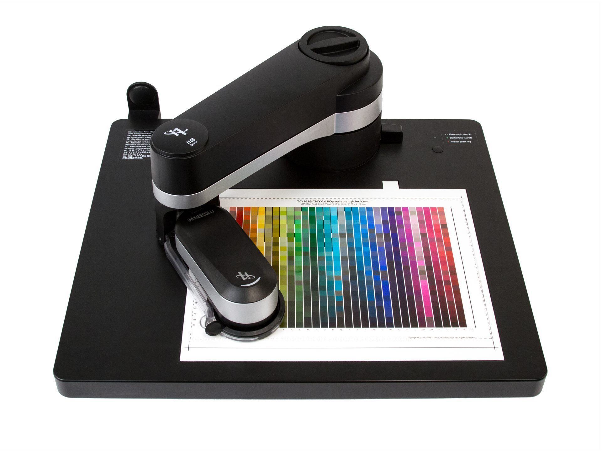
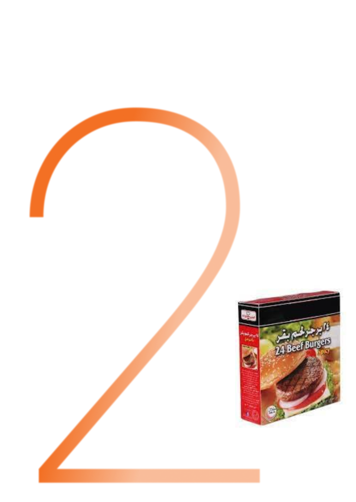
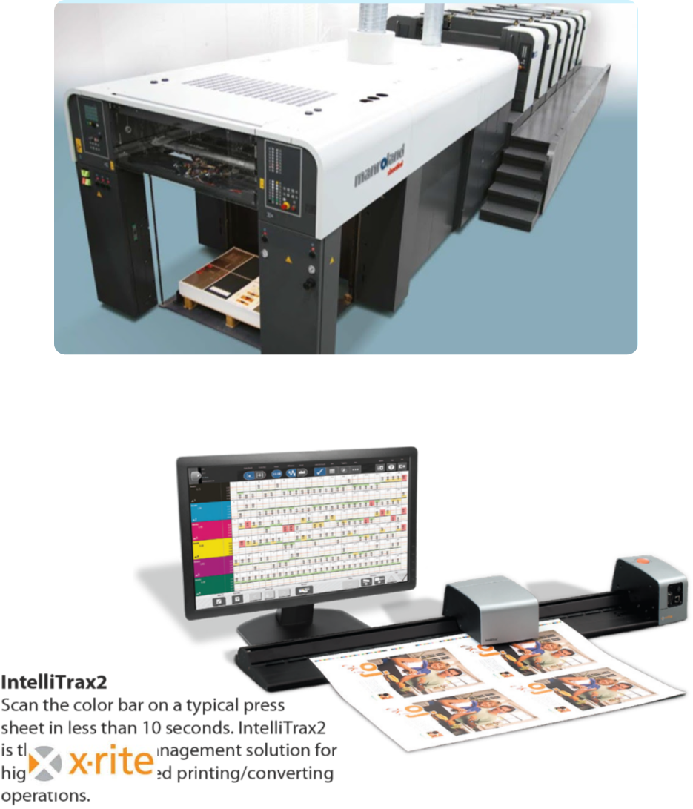
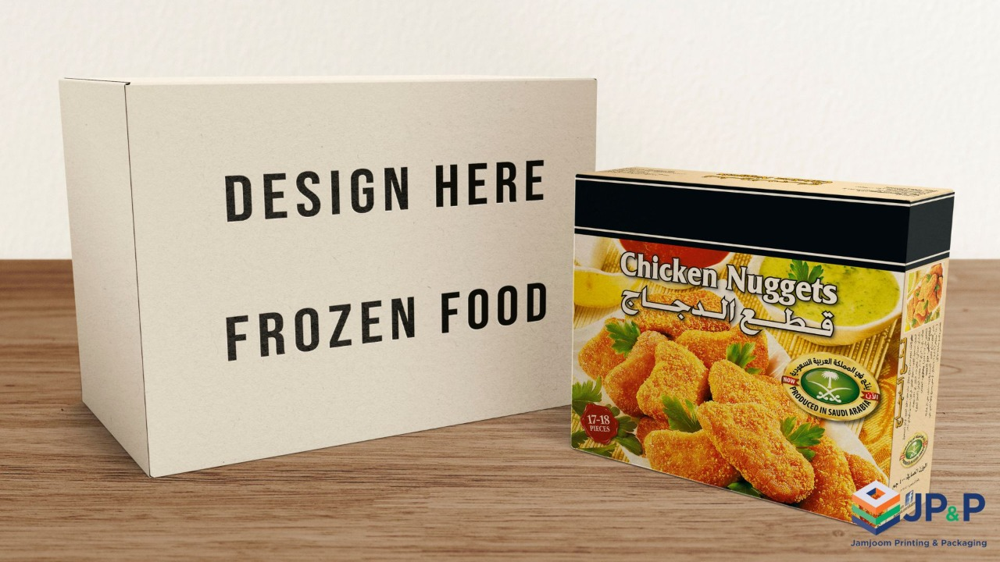

C olor is a major element of a product’s packaging. One that is particularly critical because it is vivid, effect loaded and memorable.
Color is the very first perception the customer will have of a brand
Color increases a Brand’s recognition by 80%
Packaging is the preferred communication tool to boost a brand’s value
More than 25% of adults say that the color helps in informing them about product quality . Color reproduction has a fundamental problem: a given "color " doesn't necessarily produce the same color in all process . Hence color variation across production is a major problem faced by packaging industry
Only a well Color Managed work flow will give accurate color in design, Proofing & Printing

JP&P we standardized our Pre-press, Proof and Printing processes as per the International Print Standards Of ISO 12647-2 for Offset Packaging JP&P invested in state of the art color management modules (CMM) from GMG Color, Germany & X-Rite/Pantone, USA
JP&P trained QA, prepress & printing departments to continuously monitor the quality with SOP’s and quality checks
JP&P equipped all processes with the best software and Hardware technologies available to meet current and future exacting quality demands

JP&P Color affects every workflow. When you need to produce consistent, repeatable color, we must be keen in the process standardization and color management. Varying printing conditions and substrates & countless parameters provide diverse challenges. Safe processes are therefore as essential for the graphic arts industry as a consistent appearance for any successful brand or product.
JP&P we do process standardization and calibrate our display monitors, proofing printer & Offset printing Press to ISO 39 standards. we cross check this in regular intervals and do corrective actions accordingly. Also, we create Board profiles with Automated X-rite i1io pro3 Spectrophotometer to match the color according to board color changes – every six months we do the Press standardization and Board profiling based on the available boards with us so that color will be always the same whether we change board or chemicals.


JP&P Standardized Pre-press, Digital Hard Proof, CTP and Press as per ISO 12647-2 workflow which can print ISO 39 , Gracol or Customized Standards.
JP&P bring consistent print results across print runs with X-Rite/Pantone Intellitrax Scanning System and confirm prints are run as per ISO 39 or Gracol Standards.
At JP&P, We can print the Digital Hard Proof with different paper simulations like Folding Box board, Duplex board ,Kraft board , Grey Board etc. within delta e 3 .
At JP&P, We can bring best quality on different packaging substrates by simulation of ISO 39 coated paper results on various substrates like food board, Duplex Board ,Grey Board, Kraft Board etc. JP&P make sure all the jobs are compared with Digital Proof and ensure the Press Print and Digital Proof match .
At JP&P, We can print CMYK & Spot Colors within delta e less than 3 and ensure TVI’s & Gray Balance is within strict ISO 12647-2 tolerance
JP&P use X-Rite Ink Formulation Software to ensure spot colors are mixed within Delta E 2
JP&P use global vision inspection technology for print and art work comparison to ensure all design elements are intact in final printed product
At JP&P,We have a well trained expert printing team who can use the right color management tools to reproduce the customer expected COLOR to the maximum extent.